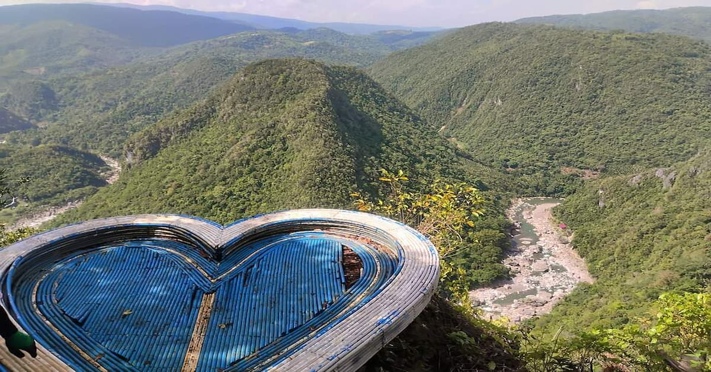
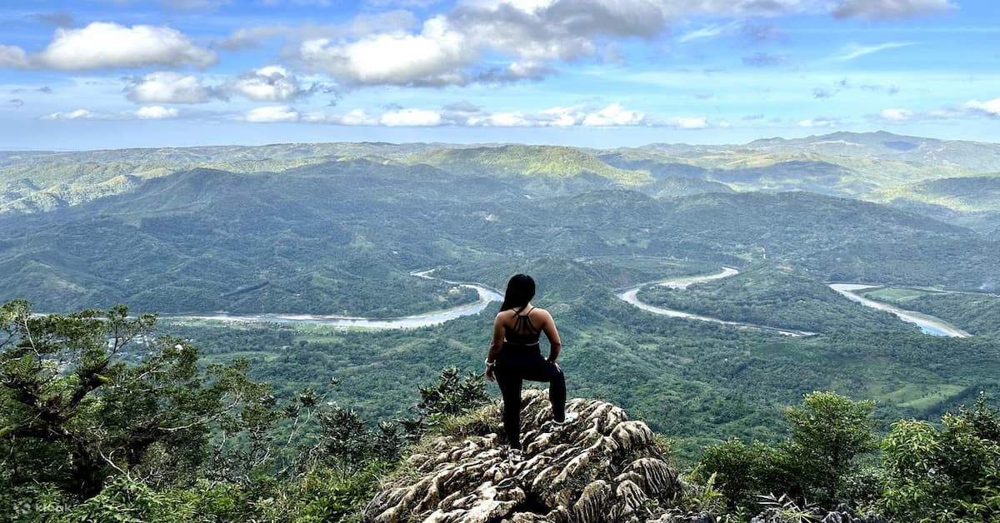
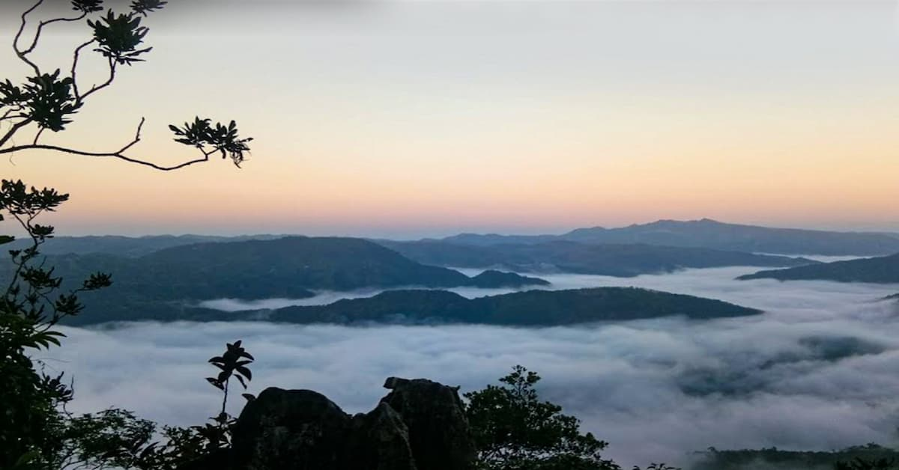

Location:
Brgy. Daraitan, Tanay, Rizal.
Best for: Experienced Hikers, Fitness Buffs, and Summit Seekers.
Vibe: Challenging, Majestic, and Adventurous.


Mount Daraitan
A Rugged Ascent to One of the Philippines' Most Rewarding Summits.
Mount Daraitan is the ultimate challenge for hikers seeking a raw, untamed mountain experience just hours away from the city. Known for its steep limestone trails and sweeping 360-degree views, it stands as a testament to the rugged beauty of the Rizal highlands.
Brgy. Daraitan, Tanay, Rizal.


